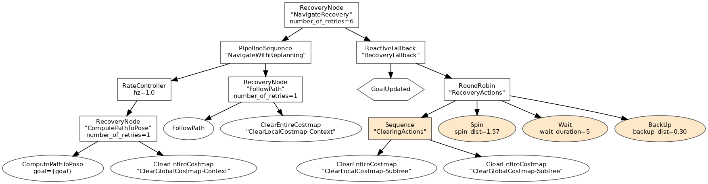
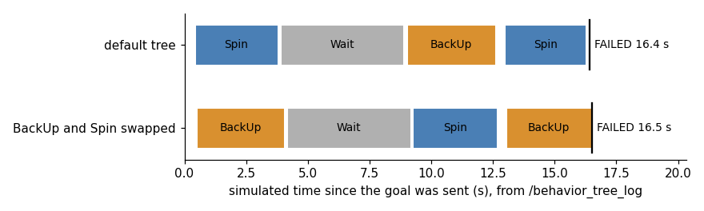
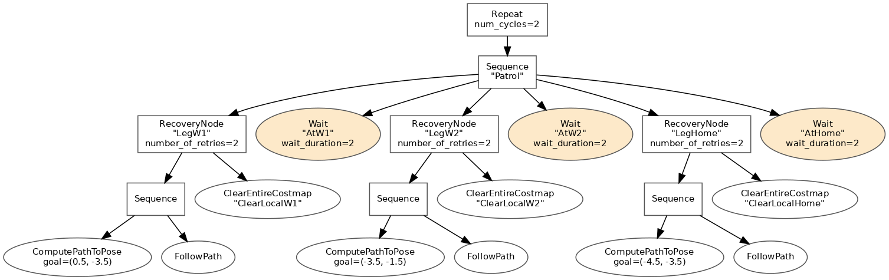
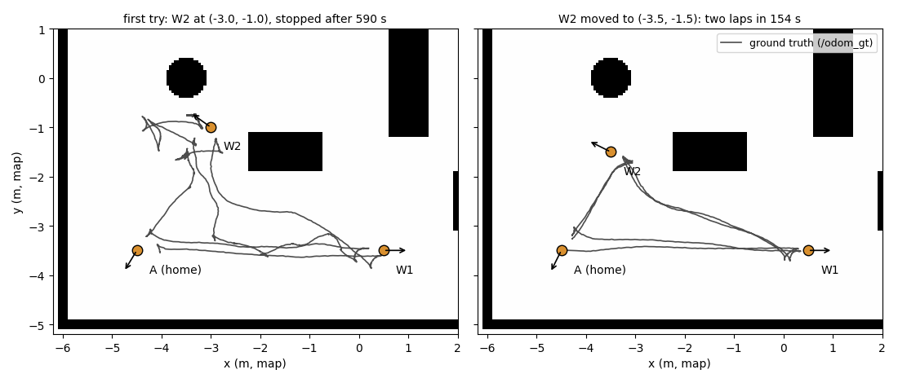

Navigate · Project 13
Behaviour trees: read, change and write one
| Goal | Open the behaviour tree that Nav2 runs for every goal, draw it, change the order of its recoveries in your own copy, load the copy into bt_navigator and show from the tree's own log that the robot now recovers in the new order. Then write a small tree of your own that patrols three waypoints twice, with no Python node in the loop. |
| Time | 1.5 h |
| Before you start | Chapter 10, Task 4, where you start Nav2 and AMCL and send goals with go_to_goal.py. |
| You will learn | how Nav2's navigate_to_pose_w_replanning_and_recovery.xml is built (control nodes, conditions, actions, and the RecoveryNode / RoundRobin pair that decides what to try when planning fails); how bt_navigator picks its tree (default_nav_to_pose_bt_xml) and how to check which tree is loaded; how to read /behavior_tree_log to see each node change state, in simulated time; how to write a tree from nodes that ship with Nav2 Humble, and what goes wrong when a waypoint is badly placed. |
Every terminal starts with:
cd go2-nav-sim
source env.sh
Groot2 (the graphical tree editor the Nav2 docs use) is not installed in this course. A tree is a short XML file: you edit it
in a text editor and draw it with bt_tools.py, which needs only Graphviz (dot).
The files of this project:
| File | What it does |
|---|---|
trees/default.xml |
an unmodified copy of Nav2 Humble's navigate_to_pose_w_replanning_and_recovery.xml |
trees/recovery_swapped.xml |
the same tree with Spin and BackUp swapped |
trees/patrol.xml |
the patrol tree (A → W1 → W2 → A, twice) |
trees/patrol_tight_w2.xml |
the first version of the patrol, kept to reproduce the failure in "If it goes wrong" |
nav_bt.launch.py |
Nav2 + AMCL as nav.launch.py starts them, with bt_xml:=<tree> |
bt_log.py |
prints /behavior_tree_log one line per state change, and can log the true pose |
bt_tools.py |
ROS-free: draw a tree, list its recoveries and waypoints, summarise a log |
plot.py |
the two result figures |
Task 1: Read Nav2's default tree
1.1 Check the copy and list its recoveries
Objective: know which node runs when the planner fails.
diff /opt/ros/humble/share/nav2_bt_navigator/behavior_trees/navigate_to_pose_w_replanning_and_recovery.xml \
projects/p13_behaviour-trees/trees/default.xml && echo identical
python3 projects/p13_behaviour-trees/bt_tools.py recoveries projects/p13_behaviour-trees/trees/default.xml
identical
ClearingActions -> Spin -> Wait -> BackUp
Check: identical, and four recoveries in this order.
1.2 Draw the tree and read it from the top
Objective: say what each control node does with a failure.
python3 projects/p13_behaviour-trees/bt_tools.py draw projects/p13_behaviour-trees/trees/default.xml /tmp/default_tree.png
/tmp/default_tree.png: 18 nodes

Boxes are control nodes, the hexagon is a condition, ellipses are actions; the recoveries are shaded. Read it from the top:
RecoveryNode "NavigateRecovery"ticks its first child. If that child fails, it ticks the second child (the recovery) and, if the recovery succeeds, tries the first child again. It gives up afternumber_of_retries=6recoveries.- The first child,
PipelineSequence "NavigateWithReplanning", replans at 1 Hz (RateController) and follows the latest path. Each of the two has its own smallRecoveryNodethat clears a costmap once before failing upwards. - The second child,
ReactiveFallback "RecoveryFallback", first checksGoalUpdated(a new goal cancels the recovery), then ticksRoundRobin "RecoveryActions". ARoundRobinruns one child per tick and remembers where it stopped, so successive failures get ClearingActions, Spin, Wait, BackUp, ClearingActions, Spin.
Check: you can say which recovery runs third (Wait) and how many recoveries happen before the goal fails (6).
Task 2: Make the default tree fail and log it
2.1 Start Nav2 with a tree you name
Objective: run Nav2 with a tree you name, so the later swap is the only change.
scripts/up.sh # terminal 1: sim, estimation, Nav2; wait for "stack up"
bash scripts/stop.sh nav # terminal 1: stop the Nav2 that up.sh started; Gazebo and estimation keep running
ros2 launch projects/p13_behaviour-trees/nav_bt.launch.py # terminal 2, leave it running
nav_bt: /tmp/nav2_params_bt_tf9wwvk1.yaml uses /opt/ros/humble/share/nav2_bt_navigator/behavior_trees/navigate_to_pose_w_replanning_and_recovery.xml
...
[lifecycle_manager-3] [INFO] [...] [lifecycle_manager_localization]: Managed nodes are active
[lifecycle_manager-11] [INFO] [...] [lifecycle_manager_navigation]: Managed nodes are active
nav_bt.launch.py copies config/nav2_params.yaml, adds bt_navigator.default_nav_to_pose_bt_xml, and starts the same
nav2_bringup launch file as nav.launch.py (without the passive mapper). Without bt_xml:= it loads Nav2's own file,
so this run is today's behaviour.
Check: both "Managed nodes are active" lines appear (localization and navigation).
2.2 Check which tree is loaded
Objective: read the tree's path from the running node, not from your launch command.
ros2 param get /bt_navigator default_nav_to_pose_bt_xml # terminal 1
String value is: /opt/ros/humble/share/nav2_bt_navigator/behavior_trees/navigate_to_pose_w_replanning_and_recovery.xml
Check: the parameter names Nav2's file.
2.3 Send an unreachable goal and log the tree
Objective: force the recoveries to run, and record their order.
The goal (1.0, 0.0) is the centre of the brick wall (box1 in Gazebo, BOXES[1] in make_arena.py: 0.8 m × 2.4 m at
(1.0, 0.0)). The planner can never reach it, so every recovery runs.
python3 projects/p13_behaviour-trees/bt_log.py | tee /tmp/default.log # terminal 3
python3 src/go2_nav_sim/scripts/go_to_goal.py 1.0 0.0 0.0 # terminal 4
Terminal 4:
[INFO] [...] [basic_navigator]: goal -> (1.00, 0.00, yaw 0.00)
[INFO] [...] [basic_navigator]: distance remaining 0.00 m, recoveries 3
...
[INFO] [...] [basic_navigator]: distance remaining 0.00 m, recoveries 14
RESULT FAILED sim_time 17.9 s ground-truth final error 6.68 m final pos (-4.38, -3.96)
Terminal 3 (Ctrl-C it after the result; an excerpt):
0.40 RecoveryFallback IDLE -> RUNNING
0.40 RecoveryActions IDLE -> RUNNING
0.40 Spin IDLE -> RUNNING
3.81 Spin RUNNING -> SUCCESS
3.81 RecoveryActions RUNNING -> SUCCESS
...
16.41 NavigateRecovery RUNNING -> FAILURE
Check: RESULT FAILED, and the log ends with NavigateRecovery ... -> FAILURE.
Common mistakes: trusting the recoveries number in the feedback. It reached 14 for six recoveries in this run, and it
rose to 5 or 6 during the patrols of Task 4, which had no failed legs (their Wait stops are behaviour-server actions too).
The tree log is the record of what ran.
2.4 Summarise the log
Objective: reduce the log to the recoveries and their start times.
python3 projects/p13_behaviour-trees/bt_tools.py summary /tmp/default.log
0.1 s ClearLocalCostmap-Subtree
0.4 s Spin
3.9 s Wait
9.0 s BackUp
12.7 s ClearLocalCostmap-Subtree
12.9 s Spin
Check: six recoveries in the order of Task 1.
Task 3: Change the recovery order
3.1 Swap two recoveries in a copy
Objective: change one thing in the tree.
trees/recovery_swapped.xml is trees/default.xml with Spin and BackUp exchanged inside RoundRobin:
cd projects/p13_behaviour-trees
diff trees/default.xml trees/recovery_swapped.xml
python3 bt_tools.py recoveries trees/recovery_swapped.xml
cd ../..
5a6
> p13 change: BackUp runs before Spin in RecoveryActions (one swap, nothing else changed).
29,30d29
< <Spin spin_dist="1.57"/>
< <Wait wait_duration="5"/>
31a31,32
> <Wait wait_duration="5"/>
> <Spin spin_dist="1.57"/>
ClearingActions -> BackUp -> Wait -> Spin
Check: the diff touches only the comment and the RoundRobin children.
3.2 Load the copy
Objective: make bt_navigator use your file.
Stop nav_bt.launch.py in terminal 2 with Ctrl-C (or bash scripts/stop.sh nav in terminal 1), then:
ros2 launch projects/p13_behaviour-trees/nav_bt.launch.py bt_xml:=$PWD/projects/p13_behaviour-trees/trees/recovery_swapped.xml # terminal 2
ros2 param get /bt_navigator default_nav_to_pose_bt_xml # terminal 1, after "Managed nodes are active" twice
nav_bt: /tmp/nav2_params_bt_bd80zc85.yaml uses /home/.../go2-nav-sim/projects/p13_behaviour-trees/trees/recovery_swapped.xml
String value is: /home/.../go2-nav-sim/projects/p13_behaviour-trees/trees/recovery_swapped.xml
Check: the parameter shows your file. The path must be absolute: bt_navigator does not know your working directory.
3.3 Rerun the mission and compare the logs
Objective: show the change in the log, not in the XML.
Repeat 2.3 (log to /tmp/swapped.log). The result line was
RESULT FAILED sim_time 18.2 s ground-truth final error 6.13 m final pos (-4.03, -3.52), and:
python3 projects/p13_behaviour-trees/bt_tools.py summary /tmp/swapped.log
0.1 s ClearLocalCostmap-Subtree
0.5 s BackUp
4.1 s Wait
9.2 s Spin
12.7 s ClearLocalCostmap-Subtree
13.0 s BackUp

The chase camera during the swapped run: the robot backs up first, waits, then turns.
To redraw the figure from your own logs, copy them to results/default.log and results/swapped.log and run
python3 projects/p13_behaviour-trees/plot.py.
Check: BackUp is the first action after the clearing step, and Spin is third.
3.4 Give up sooner
Objective: change how many recoveries the tree allows, and see when the goal fails.
Make a copy with number_of_retries="2" on NavigateRecovery (the two inner RecoveryNodes have 1 and stay as they are),
load it as in 3.2 and repeat 2.3:
sed 's/number_of_retries="6"/number_of_retries="2"/' projects/p13_behaviour-trees/trees/default.xml > /tmp/retries2.xml
ros2 launch projects/p13_behaviour-trees/nav_bt.launch.py bt_xml:=/tmp/retries2.xml # terminal 2, after stopping the old one
python3 projects/p13_behaviour-trees/bt_log.py | tee /tmp/retries2.log # terminal 3
python3 src/go2_nav_sim/scripts/go_to_goal.py 1.0 0.0 0.0 # terminal 4
The saved run (results/try_retries2.log):
python3 projects/p13_behaviour-trees/bt_tools.py summary projects/p13_behaviour-trees/results/try_retries2.log
grep 'NavigateRecovery.*FAILURE' projects/p13_behaviour-trees/results/try_retries2.log
0.1 s ClearLocalCostmap-Subtree
0.3 s Spin
4.26 NavigateRecovery RUNNING -> FAILURE
Two recoveries ran. NavigateRecovery failed at 4.26 s, as soon as the first Spin ended and planning failed once more,
instead of at 16.4 s.
Check: two lines in the summary and a FAILURE near 4 s.
Task 4: Write a patrol tree
4.1 Read the patrol tree
Objective: a tree that visits A → W1 → W2 → A twice and stops 2 s at each point.
There are two ways to do this without new software. py_trees is not installed, and a Python state machine (as in
project 4's polar controller or Rico's br2_fsm_bumpgo_py) would sit outside Nav2 and need its own retry logic. A Nav2 BT
XML runs inside bt_navigator, where the planner and controller clients, the costmap-clearing services and the action
feedback are already loaded, and uses only nodes listed in plugin_lib_names in nav2_params.yaml. This project uses the
XML.
trees/patrol.xml, with one leg shown (the other two differ only in the goal):
<Repeat num_cycles="2">
<Sequence name="Patrol">
<RecoveryNode number_of_retries="2" name="LegW1">
<Sequence>
<ComputePathToPose goal="0;map;0.5;-3.5;0;0;0;0.0;1.0" path="{path}" planner_id="GridBased"/>
<FollowPath path="{path}" controller_id="FollowPath"/>
</Sequence>
<ClearEntireCostmap name="ClearLocalW1" service_name="local_costmap/clear_entirely_local_costmap"/>
</RecoveryNode>
<Wait name="AtW1" wait_duration="2"/>
...
Each leg's recovery clears only the local costmap. A leg that fails in FollowPath (the controller) can be helped by that;
a leg that fails in ComputePathToPose (the global planner) cannot, because the planner reads the global costmap, so the
retries fail the same way and the leg fails.

python3 projects/p13_behaviour-trees/bt_tools.py waypoints projects/p13_behaviour-trees/trees/patrol.xml
( 0.50, -3.50) yaw 0.0 deg
(-3.50, -1.50) yaw 153.4 deg
(-4.50, -3.50) yaw -116.6 deg
Check: three waypoints, the last one A.
4.2 Run the patrol
Objective: run the tree from a fresh stack with the robot on A.
Terminal 1, a fresh stack, then stop its Nav2 (Gazebo and estimation keep running):
scripts/up.sh && bash scripts/stop.sh nav
Terminal 2, Nav2 with the patrol tree (it keeps running):
ros2 launch projects/p13_behaviour-trees/nav_bt.launch.py bt_xml:=$PWD/projects/p13_behaviour-trees/trees/patrol.xml
Terminal 3, after "Managed nodes are active" has appeared twice in terminal 2, the tree log and the true pose:
python3 projects/p13_behaviour-trees/bt_log.py --gt /tmp/patrol_gt.csv | grep -E 'Leg|At|Repeat' | grep -v 'IDLE -> RUNNING'
Terminal 4, any goal starts the tree. The tree ignores the goal's pose; A is given so that the script reports the error at A:
python3 src/go2_nav_sim/scripts/go_to_goal.py -4.5 -3.5 -2.03
Output of the logger, from the first successful run in the Results table:
21.21 LegW1 RUNNING -> SUCCESS
23.22 AtW1 RUNNING -> SUCCESS
54.35 LegW2 RUNNING -> SUCCESS
56.38 AtW2 RUNNING -> SUCCESS
71.43 LegHome RUNNING -> SUCCESS
73.48 AtHome RUNNING -> SUCCESS
101.24 LegW1 RUNNING -> SUCCESS
103.31 AtW1 RUNNING -> SUCCESS
135.22 LegW2 RUNNING -> SUCCESS
137.27 AtW2 RUNNING -> SUCCESS
152.16 LegHome RUNNING -> SUCCESS
154.25 AtHome RUNNING -> SUCCESS
154.25 Repeat RUNNING -> SUCCESS
and go_to_goal.py ends with RESULT SUCCEEDED sim_time 155.8 s ground-truth final error 0.32 m final pos (-4.28, -3.26).
Check: Repeat ... -> SUCCESS and RESULT SUCCEEDED. The 0.32 m at A is inside what Nav2 accepts: xy_goal_tolerance
0.25 m on AMCL's estimate, plus AMCL's own error.
This patrol does not always succeed: one of the nine fresh-stack runs in Results failed when AMCL lost the robot (see "If it goes wrong").
How the code works
Loading a tree. bt_navigator reads default_nav_to_pose_bt_xml once, when it is configured, and uses that tree for
every NavigateToPose goal that does not name its own. The course's nav2_params.yaml does not contain the key, so
nav_bt.launch.py adds it to a copy:
params = yaml.safe_load(open(os.path.join(me, 'config/nav2_params.yaml')))
params['bt_navigator']['ros__parameters']['default_nav_to_pose_bt_xml'] = LaunchConfiguration('bt_xml').perform(context)
nav2_common's RewrittenYaml, which the Nav2 launch files use for overrides, only replaces keys that already exist in the
file (substitute_params in nav2_common/launch/rewritten_yaml.py walks the existing leaves), so passing the key as a
rewrite silently does nothing.
Reading the log. bt_navigator publishes /behavior_tree_log (nav2_msgs/BehaviorTreeLog): a batch of
(node_name, previous_status, current_status) per tick in which something changed. bt_log.py prints them with the
message's stamp (simulated time) relative to the first one, and drops two kinds of line that hide the rest: changes back to
IDLE (the tree resetting a node) and GoalUpdated -> FAILURE, which the ReactiveFallback re-checks on every tick while a
recovery runs (about 100 lines per second).
Recovery order. With RoundRobin the k-th recovery (counting from 0) is child k mod 4, so with retries N = 6 the
sequence is children 0, 1, 2, 3, 0, 1. Swapping children 1 and 3 changes which action runs first and last, and nothing
else: the same six recoveries, the same FAILURE at the end.
Waypoints in the XML. A port such as goal accepts a string that nav2_behavior_tree/bt_conversions.hpp converts to a
PoseStamped: stamp;frame;x;y;z;qx;qy;qz;qw. bt_tools.waypoints parses it back. The yaw of each waypoint is the direction
of the leg that reaches it, yaw = atan2(y_to - y_from, x_to - x_from), so the controller does not have to turn on the spot
on arrival; qz = sin(yaw/2), qw = cos(yaw/2). The unit test checks this for all three waypoints.
Tests. The XML handling and the log parser run without ROS:
/usr/bin/python3 -m pytest -q projects/p13_behaviour-trees/tests
... [100%]
3 passed
Results
All runs on the arena, one robot, ROS_DOMAIN_ID of my own, one run per row unless stated. "Fresh stack" means
scripts/up.sh, then bash scripts/stop.sh nav, then nav_bt.launch.py with the tree, as in 4.2.
| Run | Tree | Outcome | Sim time | Recoveries, in order (from /behavior_tree_log) |
|---|---|---|---|---|
| unreachable goal (1.0, 0.0) | default | FAILED after 6 recoveries | 16.4 s to NavigateRecovery FAILURE |
Clear, Spin, Wait, BackUp, Clear, Spin |
| unreachable goal (1.0, 0.0) | Spin and BackUp swapped | FAILED after 6 recoveries | 16.5 s | Clear, BackUp, Wait, Spin, Clear, BackUp |
| patrol, W2 at (-3.0, -1.0) | patrol_tight_w2.xml |
stalled at W2 on lap 2, stopped by me after 590 s wall | lap 1 119.0 s; lap 2 W2 leg 197.2 s | 199 "collision ahead" warnings at W2 |
| patrol, W2 at (-3.5, -1.5), fresh stack | patrol.xml |
SUCCEEDED, 2 laps, final error 0.32 m | 154.3 s | none |
| patrol, W2 at (-3.5, -1.5), same stack again | patrol.xml |
FAILED on leg W1 | 43.6 s | AMCL 2.5 m off (see "If it goes wrong") |
| patrol, W2 at (-3.5, -1.5), fresh stack | patrol.xml |
SUCCEEDED, 2 laps, final error 0.36 m | 164.7 s | none |
| patrol, W2 at (-3.5, -1.5), fresh stack, 5 runs | patrol.xml |
SUCCEEDED 5 of 5, 2 laps, final error 0.33 to 0.39 m | 158.0 to 175.2 s | none |
| patrol, W2 at (-3.5, -1.5), fresh stack, second tester, run 1 | patrol.xml |
FAILED on leg LegHome, final error 0.47 m | 211.2 s to LegHome FAILURE; go_to_goal.py 213.1 s |
AMCL at (-0.86, 0.40), true pose (-4.23, -3.12) (see "If it goes wrong") |
| patrol, W2 at (-3.5, -1.5), fresh stack, second tester, run 2 | patrol.xml |
SUCCEEDED, 2 laps, final error 0.39 m | 158.8 s | none |
The five-run row is patrol_run4 to patrol_run8 in results/, five fresh stacks one after another: Repeat reached
SUCCESS at 166.0, 161.5, 161.3, 158.0 and 175.2 s, with final errors 0.33, 0.39, 0.36, 0.35 and 0.35 m, and no
FAILURE line in any tree log. The two "second tester" rows are from a reviewer who ran 4.2 on a fresh stack; their logs
are not in results/. Counting every fresh-stack patrol above, 8 of 9 succeeded.
Measured action durations in the two unreachable-goal runs (bt_tools.intervals): Spin (1.57 rad) 3.35 to 3.46 s;
Wait (5 s) 5.05 and 5.07 s; BackUp (0.30 m at 0.05 m/s) 3.48 to 3.63 s.
Commands that produced the table: Tasks 2 to 4 above, then
python3 projects/p13_behaviour-trees/bt_tools.py summary projects/p13_behaviour-trees/results/default.log
python3 projects/p13_behaviour-trees/bt_tools.py summary projects/p13_behaviour-trees/results/swapped.log
grep -E 'Leg|At|Repeat' projects/p13_behaviour-trees/results/patrol.log | grep -v 'IDLE -> RUNNING'
python3 projects/p13_behaviour-trees/plot.py
The raw logs are in results/: default.log, swapped.log, patrol.log (+ _gt.csv, _mission.txt),
patrol_first_try*, patrol_run2* and patrol_run3* patrol_run4* to patrol_run8* (the rows of the table, in order). try_retries2.log is the
run behind 3.4 and try_waitfirst.log the run behind the Exercise.

Exercise
Make the robot wait first. In a copy of trees/default.xml, put Wait before Spin and BackUp in
RecoveryActions, load it and send the unreachable goal of 2.3. What does the summary show in the first 5 s after the goal,
and does the robot move?
Answer: with the order ClearingActions, Wait, Spin, BackUp the summary of results/try_waitfirst.log starts
0.1 s ClearLocalCostmap-Subtree, 0.4 s Wait, 5.6 s Spin, 9.2 s BackUp: the robot stands still for the first 5.6 s.
The goal failed at 18.52 s instead of 16.4 s; on an unreachable goal this order only delays the failure.
If it goes wrong
- The new tree is not used.
ros2 param get /bt_navigator default_nav_to_pose_bt_xmlstill shows Nav2's file. The key was passed as aRewrittenYamloverride or a relative path; usenav_bt.launch.pywith an absolutebt_xml:=. - A waypoint the robot cannot settle on. The first patrol put W2 at (-3.0, -1.0), 0.72 m from the orange pillar at
(-3.5, 0.0), with the arrival heading (144°) passing the pillar. On lap 2 the leg to W2 took 197 s: the controller logged
RegulatedPurePursuitController detected collision ahead!199 times, all in the last 100 s (wall clock) while the robot was within 0.27 m of W2 (results/patrol_first_try_nav_warnings.log), and oneFailed to make progress. When the leg finally succeeded, the nextComputePathToPoseto A failed three times in 20 ms (GridBased: failed to create plan with tolerance 0.30) and the goal failed. The robot ended 0.35 m from the pillar's surface, about one robot radius (0.33 m); a start inside the inscribed cost makes the planner fail this way (my inference, I did not save the costmap). Moving W2 to (-3.5, -1.5), 1.1 m from the pillar, removed all of these warnings in the next run. - AMCL loses the robot during a patrol, on the same stack or a fresh one. Running the patrol again on the same stack,
right after a successful one, failed after 43.6 s on leg W1:
/amcl_posewas (-0.46, -1.46) while the true pose was (-0.91, -3.92). The global costmap had W1 in inscribed cost (value 99 of 100) although nothing stands there, and the planner failed; with the robot placed 2.5 m off, the scans were most likely painted in the wrong place (my inference) (results/patrol_run2_nav_warnings.log). A fresh stack does not prevent this. A second tester's first fresh-stack run failed the same way:LegHome -> FAILUREat 211.17 s afterController patience exceeded, thenGridBasedfailed twice to plan to (-4.50, -3.50); at the end/amcl_posewas (-0.86, 0.40), the true pose (-4.23, -3.12), and the global costmap read 99 at W2. Their second fresh run and my seven succeeded. The tree cannot recover from a wrong AMCL pose: each leg'sRecoveryNodeclears only the local costmap (4.1), andgo_to_goal.pyre-initialises AMCL from ground truth only before the goal, not between legs. Watch for it during the run:ros2 topic echo /amcl_pose --field pose.pose.positionagainstros2 topic echo /odom_gt --field pose.pose.position(add (-4.5, -3.5) to/odom_gt, which starts at 0 on A). If they drift apart by more than about 0.5 m, stop Nav2 (bash scripts/stop.sh nav, then a zero/cmd_vel) and start the run again. Chapter 10 covers AMCL. - The robot keeps going after you stop the script. Killing
go_to_goal.pydoes not cancel the goal. In the first patrol the script was stopped bytimeout, and the planner log shows the next leg being planned after that.bt_navigatorkeeps ticking the tree until it finishes; stop it withbash scripts/stop.sh nav, then publish a zero/cmd_vel. Behavior Tree tick rate 100.00 was exceeded!appeared up to 31 times per run. It means one tick took longer than 10 ms on a loaded machine; it did not change any result above.
Further reading
- F. Rico, A Concise Introduction to Robot Programming with ROS 2, 2025, chapters 3 and 6; code in
fmrico/book_ros2(br2_fsm_bumpgo_py,br2_bt_patrolling). - Nav2, "Groot2" tutorial: https://docs.nav2.org/rolling/tutorials/general_tutorials/groot_tutorials/groot2/groot2/